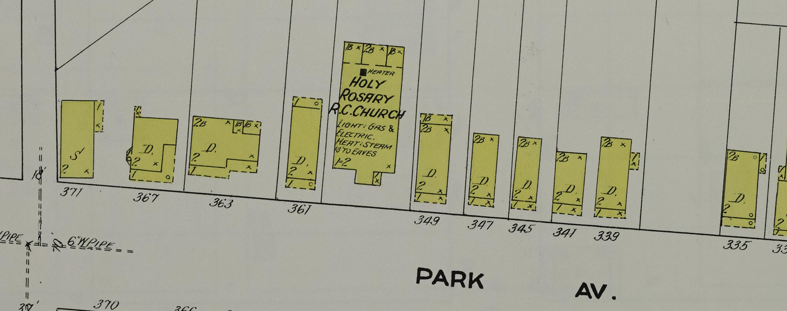

Mapped house · 1910Bosch / Kramer · Wilkes-Barre
363 Park Avenue
Emil, Hilda, Rose and older Ferdinand · 1900–10
The 1900 and 1910 censuses place the shared household here. A 1910 map labels a separate dwelling at 363 beside the church.


Mapped building. The church photo is block context; no identified image of the Bosch/Kramer dwelling yet.